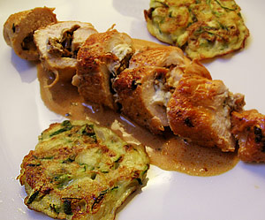

Involtini
5,5 von 64 pouletbrüstchen vom metzger einschneiden lassen damit man sie füllen kann. 20 g getrocknete steinpilze einweichen und mit einer scharlotte und etwas frischem thymian kurz andämpfen. 100 g boursin auf die brüstchen streichen und die pilzmischung darübergeben. mit salz und pfeffer würzen und so satt wie möglich einrollen, mit zahnstocher fixieren. auf allen seiten gut anbraten, 1 el tomatenpüree kurz mitdämpfen und mit 3 dl geflügelfond (oder bouillon) ablöschen. zugedeckt 10 minuten garen. die fleischstücke beiseite stellen und ca. 3 el rahm und nochmals ein wenig thymian beigeben, etwas einkochen, abschmecken.
